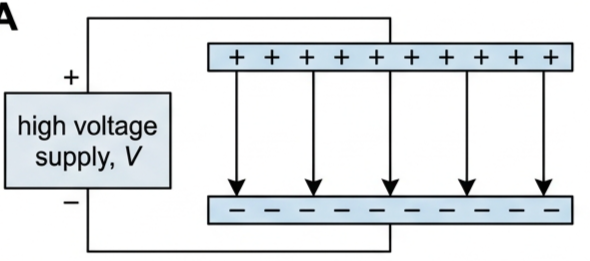
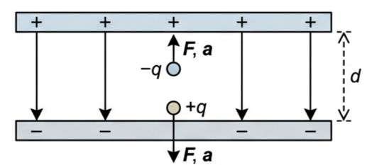
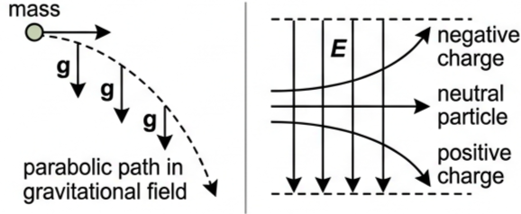
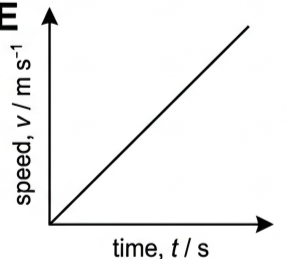
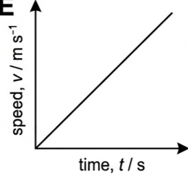
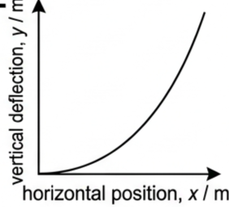
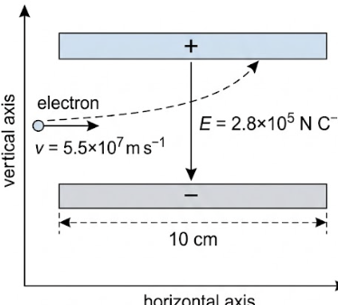

🎯 Hook – the field that only pushes one way
A uniform electric field is easy to build: connect a p.d. across two parallel metal plates. Every particle placed between the plates, if it is charged, feels the same push — a force pointing straight along the field lines, from the positive plate toward the negative plate.

⚡ Force on a stationary charge in a uniform field
We assume throughout that particles (electrons, protons, ions) are free to move in a vacuum, so their motion involves no collisions with air molecules.
From the kinetic theory of matter, particles are never truly "stationary". However, even a small p.d. accelerates charged particles to speeds far greater than their random thermal velocities. So assuming a particle starts from rest introduces no significant error in its final speed or kinetic energy.
A particle with charge \(q\) in an electric field experiences a force toward the oppositely charged plate:
Since \(E = V/d\) (Topic D.2):

Once \(F\) is known, \(a = F/m\) (Newton's second law), and the equations of motion (Topic A.1) give the rest of the motion.
✍️ Worked example 1 – accelerating along the field
An electron is very close to the negatively charged plate in Fig 2. (a) Determine its speed when it reaches the positive plate if there is a p.d. of 2000 V across the plates, separated by 8.0 cm. (b) State any assumptions made.
\(F = \dfrac{Vq}{d} = \dfrac{2000 \times 1.60\times10^{-19}}{0.080}\)
\(= 4.0\times10^{-15}\ \text{N}\)
\(a = \dfrac{F}{m} = \dfrac{4.0\times10^{-15}}{9.110\times10^{-31}}\)
\(= 4.4\times10^{15}\ \text{m s}^{-2}\)
\(v^2 = 0 + (2 \times 4.4\times10^{15} \times 0.080)\)
\(v = 2.7\times10^{7}\ \text{m s}^{-1}\)
📐 Charged particles crossing a uniform field
A different situation arises when a charged particle moves horizontally into a field that acts vertically. This is analogous to a mass projected horizontally in a uniform gravitational field: both involve constant speed in one direction and acceleration in a perpendicular direction.

📈 Reading the two motions on a graph
| Graph type | Axes (X, Y) | Shape | What to read |
|---|---|---|---|
| Speed–time (charge moving along a field line) | Time / s · Speed \(v\) / m s⁻¹ | Straight line through the origin, constant gradient | Gradient = acceleration \(a = F/m = Eq/m\), constant because \(F\) is constant |
| Trajectory (charge moving across a field) | Horizontal position \(x\) / m · Vertical deflection \(y\) / m | Parabola, curving toward the oppositely charged plate | Same shape as projectile motion, since \(y \propto x^2\) — the particle covers equal \(x\) in equal time but ever-larger \(y\) |


✍️ Worked example 2 – crossing the field (D3.2)
An electron travelling horizontally at a constant speed of \(5.5\times10^{7}\ \text{m s}^{-1}\) is directed into a uniform electric field of \(2.8\times10^{5}\ \text{N C}^{-1}\) acting vertically downwards. (a) Determine the force and acceleration of the electron in the field (magnitude and direction). (b) If the field extends for a horizontal distance of 10 cm, determine the time the electron spends in the field. (c) Determine the vertical displacement of the electron from its original path as it leaves the field. (Charge on electron \(-1.6\times10^{-19}\) C; mass of electron \(9.110\times10^{-31}\) kg.)
\(F = Eq = (2.8\times10^{5})(1.60\times10^{-19})\)
\(a = F/m\)
\(v = s/t \Rightarrow t = s/v\)
\(s_y = ut + \tfrac12at^2\), with \(u = 0\)
(a) \(F = 4.5\times10^{-14}\ \text{N}\) upwards; \(a = F/m = 4.9\times10^{16}\ \text{m s}^{-2}\) upwards.
(b) \(t = 0.10 / (5.5\times10^{7}) = 1.8\times10^{-9}\ \text{s}\).
(c) \(s_y = \tfrac12(4.9\times10^{16})(1.8\times10^{-9})^2\)
\(= 0.081\ \text{m}\ (8.1\ \text{cm})\)

🔬 Particle beams and the electron gun
Particle beams are streams of very fast-moving charged particles (electrons, protons or ions) moving together with the same velocity across a vacuum. Experiments with particle beams led to the discovery of the electron, and they remain central to nuclear physics research, for example at CERN (European organization for nuclear research).
Figure 7 shows an electron beam deflection tube, commonly used to demonstrate the production and properties of electron beams. A heating current heats the metal cathode (the electrode out of which conventional current flows, held at 0 V), increasing the kinetic energy of its free electrons until some escape the metal's surface — a process called thermionic emission. A large positive voltage on the anode (the electrode into which conventional current flows) then accelerates these electrons into a beam: an "electron gun".

When the beam strikes the fluorescent screen, some kinetic energy converts to visible light: a spot. A p.d. across the X-plates deflects the spot left or right; a p.d. across the Y-plates deflects it up or down — the same physics as Worked example 2, applied twice, perpendicular to each other.
🌍 Real-world: this is how a CRT screen worked
Before flat screens, televisions and oscilloscopes used exactly this deflection tube. The X- and Y-plates steer the electron beam to any point on the fluorescent screen, redrawing the spot many times a second to build a picture or trace a waveform.
🚀 HL Extension – when classical mechanics starts to fail
Worked example 1 gave an electron a final speed of \(2.7\times10^{7}\ \text{m s}^{-1}\) — about 9% of the speed of light. The equations of motion used here (\(F=ma\), \(v^2=u^2+2as\)) assume Newtonian mechanics, which is an excellent approximation at this speed but starts to break down as \(v\) approaches \(c\) (Topic A.5).
Challenge: the electron in Worked example 2 also reaches a substantial speed. Estimate its speed on leaving the field, and comment on whether relativistic corrections would matter here. Its horizontal speed alone is already \(5.5\times10^{7}\ \text{m s}^{-1}\) (~18% of \(c\)); adding the small vertical component barely changes the total speed. At around 18% of \(c\), relativistic corrections to mass and energy are still small (a percent or two) but no longer completely negligible for high-precision work.
⚠️ Trap corner – common mistakes
| Misconception | Correct view |
|---|---|
| A charge always accelerates in the same direction as the field | Only a positive charge does. A negative charge accelerates opposite to the field, toward the positive plate |
| Treating the particle's initial speed as exactly zero is "wrong" because particles are never truly stationary | It is a valid simplifying assumption: the p.d. accelerates the particle to speeds far above its random thermal velocity, so the error is negligible |
| A charge crossing a field travels in a straight line, just deflected sideways | It follows a curved, parabolic path — exactly like a ball thrown horizontally in a gravitational field |
| The horizontal speed changes as the particle crosses the field | There is no horizontal force, so horizontal speed stays constant; only the vertical component changes |
Complete the statements:
✓ \(m = F/a = (1.9\times10^{-16})/(7.4\times10^{9}) = 2.6\times10^{-26}\ \text{kg}\).
✓ The ion is positive, so it accelerates in the same direction as the field.
✓ i.e. vertically downwards.
✓ (b) \(F = Eq = (1.3\times10^{6})(1.60\times10^{-19}) = 2.1\times10^{-13}\ \text{N}\).
✓ i. Accelerated through the full p.d., the proton gains \(3.7\times10^{4}\ \text{eV}\).
✓ ii. \(E_{\text{k}} = qV = (1.60\times10^{-19})(3.7\times10^{4}) = 5.9\times10^{-15}\ \text{J}\).
✓ \(v^2 = 0 + 2as = 2(1.6\times10^{16})(0.050) = 1.6\times10^{15}\).
✓ \(v = 4.0\times10^{7}\ \text{m s}^{-1}\) — about forty million m s⁻¹, as required.